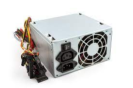
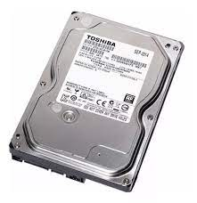

¿Qué es un placa madre y para qué sirve?
Resultado de imagen para placa madre
La tarjeta madre es la columna vertebral que une los componentes de la computadora en un mismo punto
y les permite comunicarse entre sí. Sin ella, ninguna de las piezas de la computadora, como el CPU, la GPU o el
disco duro, podrían interactuar
El Monitor
¿Qué es el Monitor y para qué sirve?
El monitor del computador, también conocido como pantalla, muestra la
información de tu equipo como imágenes y textos, que son generados gracias a
una tarjeta de video que se encuentra en el interior de la torre
del computador
Zocalo de CPU
El zócalo de CPU (socket en inglés) es un tipo de zócalo electrónico
(sistema electromecánico de soporte y conexión eléctrica) instalado en la
placa base, que se usa para fijar y conectar el microprocesador, sin soldarlo lo
cual permite ser extraído después
Tarjeta de expancion
La tarjeta de expansión es un tipo de dispositivo con diversos circuitos
integrados (chips) y controladores, que insertada en su correspondiente ranura
de expansión sirve para expandir las capacidades de la computadora a la que se inserta.
Las tarjetas de expansión más comunes sirven para añadir memoria, controladoras de
unidad de disco, controladoras de vídeo, puertos serie o paralelo y dispositivo de
módem interno
Fuente de alimentacion
Una fuente de alimentación es un componente esencial de cualquier dispositivo electrónico ya que es ella
quien se encarga de darle vida. En cualquier equipo, por pequeño que sea, siempre hay una fuente de alimentación,
aunque no la veamos. Desde smartphones, hasta televisores y ordenadores, todos tienen un componente que se encarga
de hacer lo que una fuente de alimentación hace, que es gestionar la entrada de energía desde la red y adaptarla para
darle energía al equipo. Una fuente de alimentación, por lo tanto, es un dispositivo que se encarga proporcionar la corriente
justa y necesaria a un equipo electrónico

Disco duro
es el componente en hardware donde se almacena todo su contenido digital.
Sus documentos, imágenes, música, vídeos, programas, preferencias de aplicaciones
y sistema operativo representan el contenido digital almacenado en un disco duro.

Tarjeta de video
Se trata de uno de los componentes
principales del PC. Dado que el monitor es el medio por
excelencia de comunicación maquina-usuario. En cuanto a su
conexión física, la tarjeta de video puede ir en
una ranura como cualquier otra; aunque existen ranuras dedicadas
a tal fin: AGP.